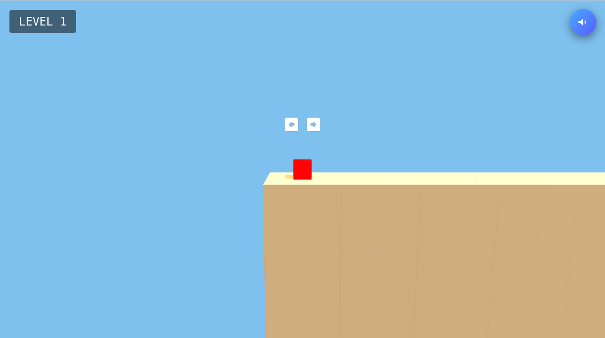

The idea
Build a platformer whose world has more than one playable layer. Switching layers gives movement and spatial reasoning a shared role in the experience.
A 2.5D browser platformer exploring layer switching, custom physics and raycasting.
Build a platformer whose world has more than one playable layer. Switching layers gives movement and spatial reasoning a shared role in the experience.

The project uses Three.js and WebGL for its 2.5D presentation, with custom raycasting physics and a layer-switching mechanic.
The repository credits Lynn Morris and Timothy Sim. I built all of the gameplay systems. The hardest challenges were making the particle sandstorm function properly and handling collision detection across different terrains.
I personally deployed the browser build on GitHub Pages without Docker. The playable build and project source are available above. Performance and level-count claims are held out of this preview until their scope is confirmed.